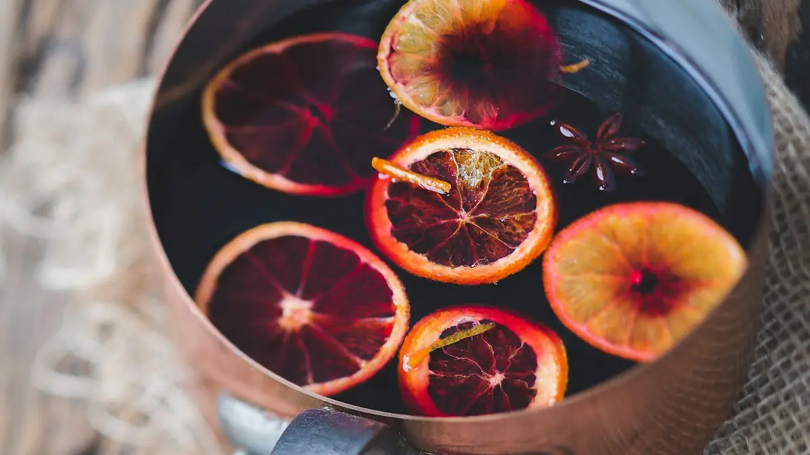

Home › Wine stories › Feuerzangenbowle: Germany's Flaming Punch and Its Cult Christmas Film
Feuerzangenbowle: Germany's Flaming Punch and Its Cult Christmas Film

Photo: Hannah Pemberton on Unsplash
A rum-soaked sugarloaf set alight over a pot of spiced red wine: how the Feuerzangenbowle became a German festive ritual, helped by a 1944 comedy students still re-enact.
Of all the hot wine drinks of a German winter, none puts on a show like the Feuerzangenbowle. The name means 'fire-tongs punch', and that is exactly the trick: a pot of spiced red wine is warmed gently, a pair of tongs or a metal grate is laid across the top, and a cone of hard sugar sits on it, soaked in strong rum and set alight. As the blue flame dances, the sugar caramelises and drips down into the wine below.
The ingredients are simple. Red wine is heated, never boiled, with cinnamon, cloves, orange and lemon. The sugarloaf, or Zuckerhut, usually weighs about 250 grams, and the rum must be strong enough to burn, at least 54 per cent alcohol, which is why Stroh 80 is a favourite. Extra rum is added with a long-handled ladle, never poured straight from the bottle into the flame, and that is one rule worth taking seriously.
Where it began is hazier. Food historians believe the drink is more than two centuries old, and it is often linked with the punch-loving German student fraternities of the nineteenth century, who sang about Krambambuli. Be careful with that story, though: Krambambuli was originally a Danzig liqueur, later a loose name for hot wine drinks, so treating it as simply an old word for Feuerzangenbowle is more legend than fact. The word Bowle itself was borrowed from the English bowl of punch.
What made the drink truly famous was a book and a film. In 1933 the writer Heinrich Spoerl published Die Feuerzangenbowle, a comic novel whose story opens with a group of gentlemen reminiscing over a steaming punch about their schooldays. One of them, privately tutored as a boy, decides to make up for it by disguising himself as a pupil in a small-town grammar school. Heinz Rühmann starred in a first screen version, So ein Flegel, in 1934.
The version Germans love came ten years later. Directed by Helmut Weiss with a 42-year-old Rühmann playing the schoolboy, it premiered in Berlin on 28 January 1944. The education minister objected to teachers being mocked, and Rühmann reportedly got the film past the censors by screening it for Hermann Göring. Its innocent escapism, made in the darkest years of the war, has prompted plenty of debate since, but its charm has proved remarkably durable, and a 1970 remake never came close.
Since the 1980s the film has been a cult event at German universities. Students pack lecture halls in early December, punch in hand, ringing alarm clocks and waving torches on cue, rather like a Rocky Horror night. Aachen's student cinema began its screenings in November 1988 and drew more than 7,000 viewers a year at its late-1990s peak. Meanwhile Nuremberg's Christkindlesmarkt, which opens today, boasts what it calls the world's biggest Feuerzangenbowle: a cauldron 3.4 metres tall holding 9,000 litres.
Want to try it at home this season? Choose a soft, fruity, unoaked red such as a Dornfelder, a young Spätburgunder or a simple Côtes du Rhône; anything grand or tannic is wasted under sugar, spice and caramel. Keep the wine below simmering point, dim the lights, light the sugarloaf safely away from anything flammable, and ladle carefully. Then, if you are feeling properly German, put the film on.
Related grapes and regions
Grapes
Regions
Sources
- Feuerzangenbowle – Wikipedia
- Die Feuerzangenbowle (1944 film) – Wikipedia
- Die Feuerzangenbowle – Alimentarium
- Feuerzangenbowle, playing with fire – Coquinaria
- The biggest Feuerzangenbowle in the world – Tourism Nuremberg
- Die Feuerzangenbowle – Filmstudio an der RWTH Aachen
The Wine Reference newsletter
New wines, stories and career guides, one email a week at most.
Over 18s only. Unsubscribe any time with one click. Your email is stored securely by Kit and never shared.
Support The Wine Reference
This guide is free, with no paywall. If it helped you choose a bottle, you can buy me a glass and keep it growing.
🍷 Buy me a glass